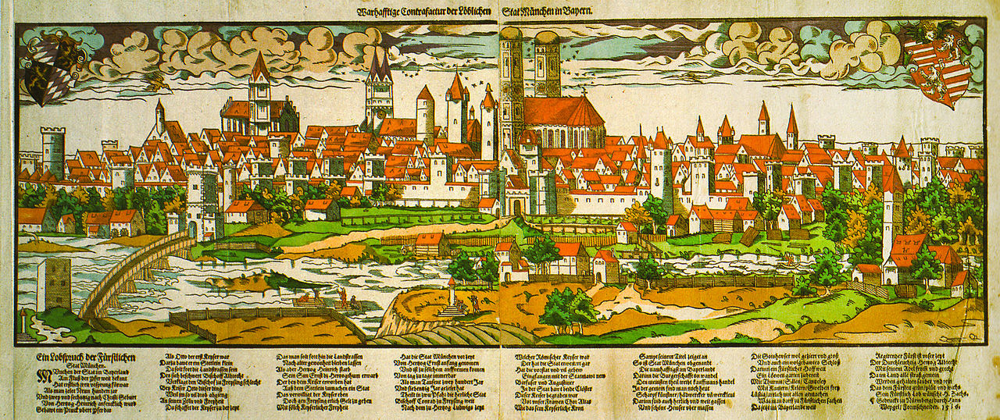
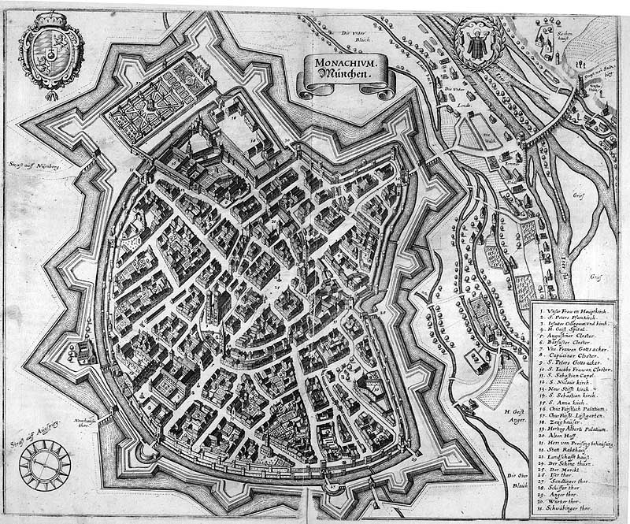

The origin of the modern city of Munich is the result of a power struggle between a military warlord and an influential Catholic bishop. Henry the Lion, Duke of Saxony and Duke of Bavaria (d. 1195) was one of the most powerful German princes of his time. He ruled over vast territories in the German Holy Roman Empire from the North and Baltic Seas to the Alps. Henry wanted to expand his power in Bavaria by gaining control of the lucrative Salt Trade, which the Catholic Church in Freising had under its control.
Bishop Otto von Freising (d. 1158) was a scholar, historian and bishop of a large section of Bavaria that was part of his diocese of Freising. Years earlier (the exact time is unclear, but may have been in the early 10th century), Benedictine monks helped build a toll bridge and a customs house over the Isar River (most likely in the modern town of Oberföhring) to control the Salt Trade between Augsburg and Salzburg (which had existed since Roman times).
Henry wanted to control the toll bridge and its income for himself, so he destroyed the bridge and customs house in 1156. He then built a new toll bridge, customs house and a coin market closer to his home downriver (at a settlement around the area of modern oldtown Munich: Marienplatz, Marienhof and the St. Peter's Church). This new toll bridge most likely crossed the Isar where the Museuminsel and the modern Ludwigsbrücke is now located.
Bishop Otto protested to his nephew, Emperor Frederick Barbarosa (d. 1190). However, on 14 June 1158, in Augsburg, the conflict was settled in favor of Duke Henry. The Augsburg Arbitration mentions the name of the location in dispute as forum apud Munichen. Although Bishop Otto had lost his bridge, the arbiters ordered Duke Henry to pay a third of his income to the Bishop in Freising as compensation.
14 June 1158, is considered the official 'founding day' of the city of Munich, not the date when it was first settled. Archaeological excavations at Marienhof Square (near Marienplatz) in advance of the expansion of the S-Bahn (subway) in 2012 discovered shards of vessels from the 11th century, which prove again that the settlement of Munich must be older than the Augsburg Arbitration of 1158. The old St. Peter's Church near Marienplatz is also believed to predate the founding date of the town.
In 1175 Munich received city status and fortification. In 1180, after Henry the Lion's fall from grace with Emperor Frederick Barbarosa, including his trial and exile, Otto I Wittelsbach became Duke of Bavaria, and Munich was handed to the Bishop of Freising. In 1240, Munich was transferred to Otto II Wittelsbach and in 1255, when the Duchy of Bavaria was split in two, Munich became the ducal residence of Upper Bavaria.
Duke Louis IV, a native of Munich, was elected German king in 1314 and crowned as Holy Roman Emperor in 1328. He strengthened the city's position by granting it the salt monopoly, thus assuring it of additional income.
On 13 February 1327, a large fire broke out in Munich that lasted two days and destroyed about a third of the town.
In 1349 the Black Death ravaged Munich and Bavaria.
In the 15th century, Munich underwent a revival of Gothic arts: the Old Town Hall was enlarged, and Munich's largest Gothic church – the Frauenkirche – now a cathedral, was constructed in only 20 years, starting in 1468.
